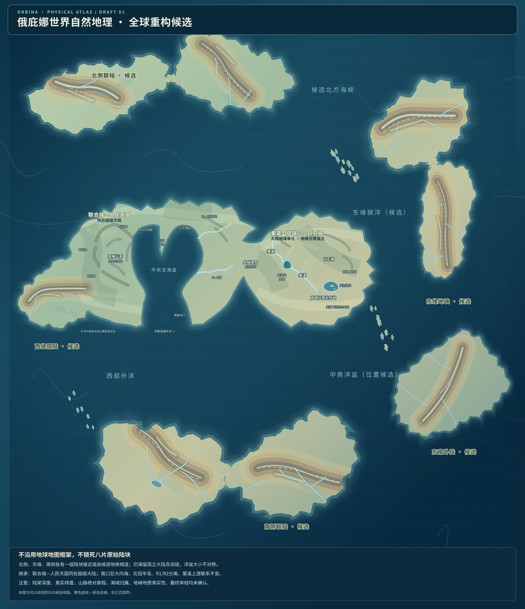

新版图层对比
打开“旧轮廓虚线”，可以看到原始完整陆块与目前裂片的差异。
正在载入 SVG…
上一版：V2.19

较多完整陆块，以三条试验地峡将不同地区硬连接。
新版：V2.20
保留主要大陆，以实际矢量剪切产生三条破碎陆缘，取消未经验证的地峡。
不必所有大陆都是完整的一块：主大陆、断裂次大陆、微大陆和岛链可以并存。仍保留中央的已确认世界观相对地理关系。
打开“旧轮廓虚线”，可以看到原始完整陆块与目前裂片的差异。
正在载入 SVG…

较多完整陆块，以三条试验地峡将不同地区硬连接。
保留主要大陆，以实际矢量剪切产生三条破碎陆缘，取消未经验证的地峡。